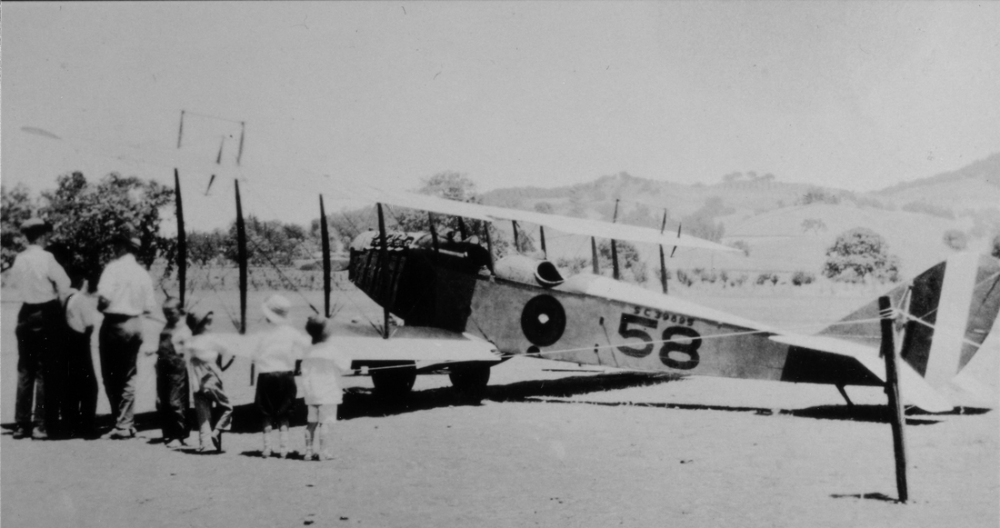
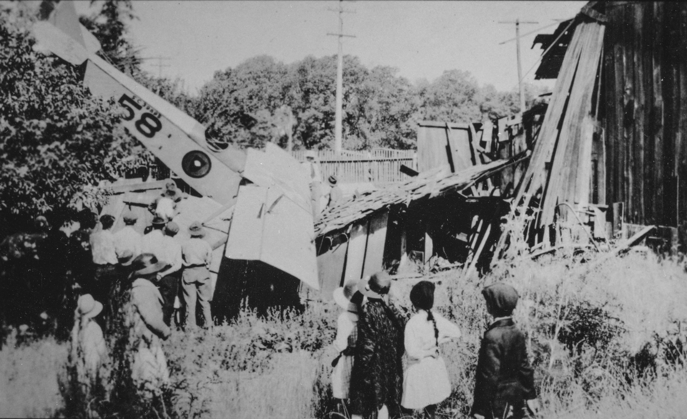
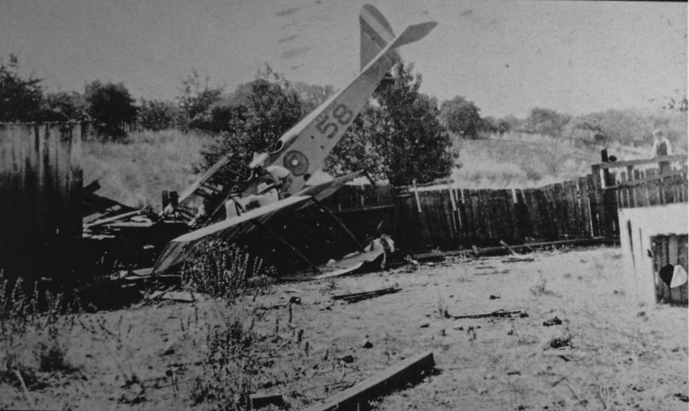
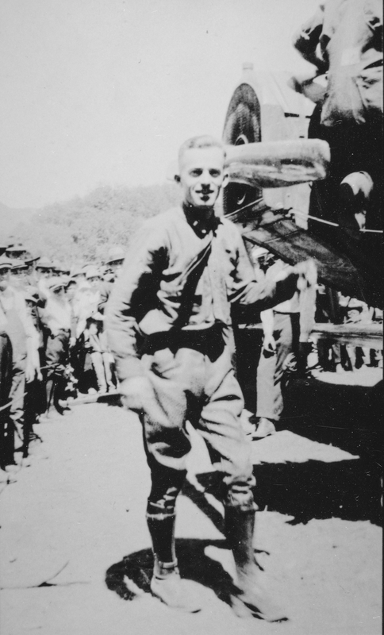

The First Flying Machine in Healdsburg
The Amazing Flight—and Crash—of Fred Young
© 2025 Hannah Clayborn All Rights Reserved

For the first time in its history Healdsburg will be visited by a flying machine... ran the headline of the local paper on July 3, 1919. Two days later, just before twilight on a Saturday evening, a large welcoming crowd (some of whom had been waiting since early morning) heard the distant motors of the Jenny biplane, and soon Lieutenant Fred Young's government flying machine was in view.
A hometown boy, Fred wanted to show his old friends some real flying. He treated them to a 30-minute stunt show, soaring at 8,000 feet, looping the loop, making like a falling leaf, and plummeting into nose dives to within a few hundred feet of the earth. Yet to the delight of his friends he landed safely in Luce's Field, the old parade ground and ballpark once known as Matheson Field. Needless to say he was welcomed like a hero.(1) Fred's grandfather, John Young, and great grandfather, Peter Griest, had opened a cabinet and coffin shop in Healdsburg in 1859, so the family was well known in town. That furniture and coffin shop eventually became Healdsburg's only mortuary business, run by Fred's father, Thomas G. Young. At the height of wartime fever in 1917 Fred enlisted and was sent to San Diego to be trained as an aviator, graduating in the 95th percentile of his class. His flying was apparently so good that when he was commissioned as a lieutenant, he was stationed at March field in Riverside and made an aviation instructor himself.(2) For months Fred Young had been promising the hometown a visit by a real flying machine. So, after performing admirably for the government at a Fourth of July aviation show in Tulare, he headed home. Fred was behind schedule as he had been held up for two hours in Napa trying to get gasoline for the plane, but his friends and admirers apparently didn't mind waiting.  Fred Young landed an air force military biplane, a JN-4, known as a "Jenny", at Matheson Field on Saturday July 5, 1920. (Healdsburg Museum/Sonoma County LIbrary)
On Sunday morning the aviator held another stunt show for anyone who happened to miss the first one. He had a little trouble gaining momentum for the take-off, so he made a quick dive under some telegraph wires. It seems that the old Matheson Street ball field did not double well as an airport. Still, Fred managed to get airborne and defied death by performing amazing aerial feats for an hour before landing.
Lt. Young was scheduled to return to headquarters in Riverside on Monday, so a large crowd assembled around the Jenny to see him off. Little children proudly had their pictures taken in front of the machine. The engine whirred and Fred was off. Just as the plane began to rise those same telegraph wires again loomed into view. According to the local press, Fred tried to dive under the wires as he had the day before, but this time one wing grazed a small oak tree. That contact spun the plane off course and within seconds a horrified crowd watched as the plane careened across Matheson Street and straight into the roof of Mr. Goodrich's barn.  Quick descent into Mr. Goodrich's barn on Monday morning July 7, 1920.
(Healdsburg Museum/Sonoma County Library)
Fred Young quickly leaped from the cockpit without a scratch. But, according to the paper, the car was beyond repair.(3)
Although the young aviator was disappointed (as well he might be, since he brought the plane to Healdsburg without government permission), his friends rallied around him. Arrangements were made to ship the ravaged remains by rail to Riverside. That night Lt. Young's Elk Lodge brethren enlivened his enforced stay by holding a dinner in his honor at the old Plaza Hotel. According to some accounts, Fred Young confessed many years later that at the time of the famous crash he had been leaning out the side of the cockpit giving an irreverent, but good-natured signal of farewell to his friends below. The next thing he knew, he was inside the Goodrich barn.(4)  An irreverent gesture from the cockpit may have distracted Lt. Fred Young at a crucial moment on Monday morning July 7, 1920. (Healdsburg Museum/Sonoma County Library)
The crash of July 7, 1919, did not seem to tarnish Fred's image as a local hero. The next year he returned to Healdsburg to take over the family mortuary business. From 1926 to 1940 he was elected and re-elected to the office of County Coroner and public administrator, also serving at president of the California State Coroner's Association. He retired only due to ill health.(5)
Neither was that flight the first time Fred was considered a hero. A decade before, in 1908, he had won second place in a state-wide pole vaulting competition at the University of California. Rumor had it that he would have won if he hadn't broken his arm. But, no matter, he won first place two years later with a jump of 11 feet 6 inches.(6) Ladies who were just young girls at the time that Fred returned to Healdsburg, Marjorie Anderson, Cleone Tilley, and Rena Phillips, remember being in awe of this daring, spirited young man. Art Scheiffer says, Fred kept his leather aviator's jacket for many years. But one day he just gave it to an old bum who didn't have a coat in the cold weather. Fred always dressed very well, Mr. Scheiffer adds, impeccably, but he was just the kind of guy who would be standing with his friends and suddenly lay them a serious bet as to whether a fly on the wall would walk up the wall or down.(7) Fred Young's obituary says that he loved nature, animals, and children and was remembered by all who knew him as a perfect gentleman and a wonderful man. He was a Republican whose fraternal and civic affiliations included the Masons, the Aahmes Temple, the Elks, the Kiwanis Club, Native Sons of the Golden West, Knights of Pythias, the American Legion, Odd Fellows, Healdsburg Country Club, and the Chamber of Commerce.(8) Along with all the accolades there is a rumor that links this same exemplary citizen to one of the most gruesome crimes in Sonoma County history, the lynching of three accused murderers in Santa Rosa in 1920. (See The Town That Kept a Secret on this site). Such was his charisma that Fred Young, even at the head of a lynch mob, was considered a great guy—and always a local hero.  "Disappointed" aviator, Lt. Fred Young, accompanies the mangled remains of the Jenny biplane bound for March Field near Riverside by rail as Healdsburgers stand solemnly by in 1919. (Sonoma County Library)
Endnotes
1. Tuomey, History of Sonoma County, vol. 2, pgs. 712-715. Tribune 3 July 1919; 10 July 1919. 2. Healdsburg Tribune 2 May, 1918. 3. Healdsburg Tribune 10 July 1919. 4. Oral Interview, Art Scheiffer, Healdsburg, 1986. 5. Healdsburg Tribune 12 Feb. 1920; 5 Nov. 1943. Healdsburg Enterprise 14 Jan. 1926; 19 May 1932. 6. Sotoyome Scimitar 9 Oct. 1908. Tribune 6 April 1910. 7. Marjorie Anderson, Cleone Tilley, Rena Phillips, and Art Scheiffer of Healdsburg were all interviewed in 1986. 8. Healdsburg Tribune, 5 Nov. 1943. Handwritten biography of Fred Young by Dean Dunnicliff, circa 1955, Healdsburg Museum. Tuomey, History of Sonoma County, vol. 2, pgs. 712-715. |